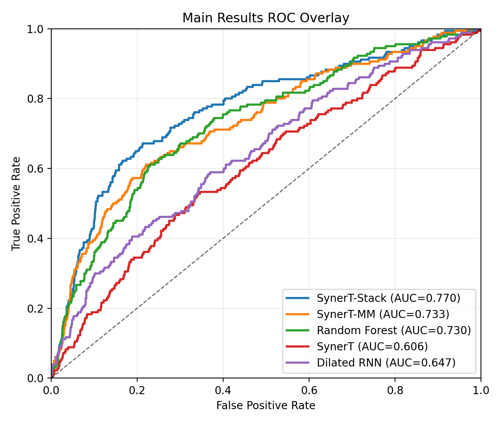
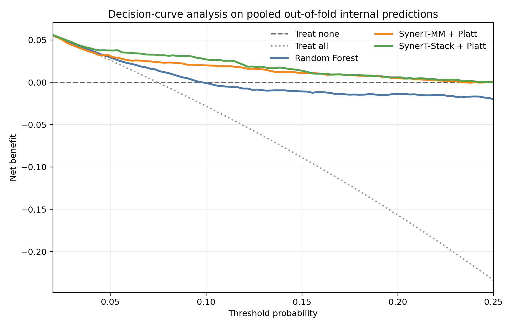
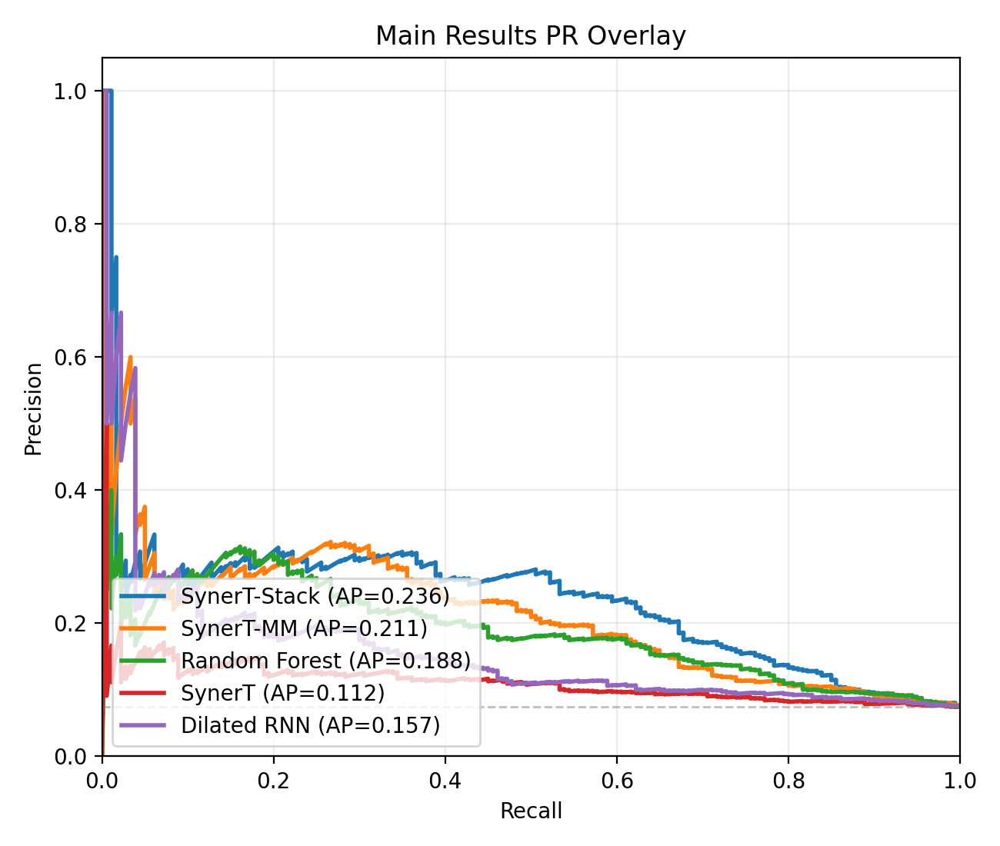
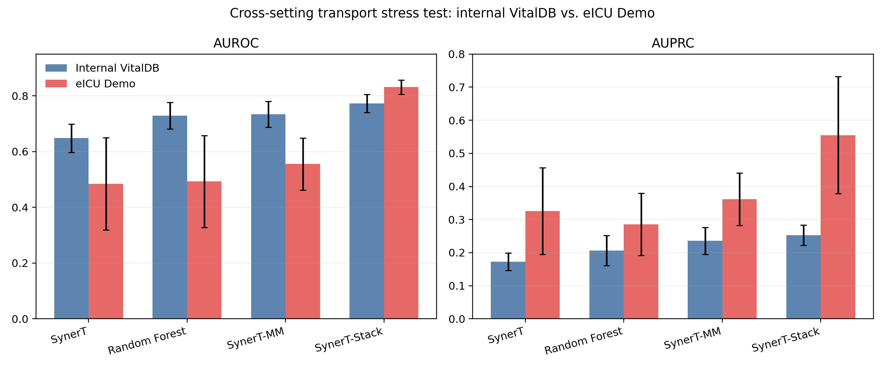

A Leakage-Aware Multimodal Evaluation Framework for Early Intraoperative Acute Kidney Injury Prediction
SynerT-Stack — a leakage-safe stacked ensemble combining waveform temporal modeling
with structured clinical context — for early AKI risk stratification within the
first 60 intraoperative minutes.
National Economics University, Hanoi, Vietnam
✉ nghiant@neu.edu.vn
0.773
AUROC (Stack)
0.252
AUPRC (Stack)
2,413
VitalDB Cases
60 min
Early Prediction Window
Abstract
Overview
Abstract
Postoperative acute kidney injury (AKI) after major non-cardiac surgery carries substantial morbidity,
yet early intraoperative risk stratification remains difficult. In this retrospective cohort study,
we propose SynerT, a waveform-only hybrid temporal backbone that combines a causal
dilated TCN with a hierarchy of dilated recurrent layers to encode early intraoperative physiologic
trajectories for AKI risk prediction. Building on SynerT, we further design two model variants:
SynerT-MM, a late-fusion multimodal extension that integrates hemodynamic burden
summaries and preoperative covariates; and SynerT-Stack, a leakage-safe stacked
ensemble that combines cross-validated predictions from SynerT-MM with strong tabular baselines
at the meta-learning stage. Among 2,413 waveform-usable cases (180 AKI-positive; 7.46% prevalence),
SynerT fell well below strong structured-data baselines — demonstrating that waveform-only temporal
modeling is insufficient under strict early constraints. SynerT-MM recovered discrimination by
incorporating hemodynamic burden summaries and preoperative covariates, and
SynerT-Stack achieved the best overall performance across AUROC, AUPRC, and F1-max.
Cross-fitted Platt recalibration substantially corrected calibration defects, and decision-curve
analysis confirmed the recalibrated stacked model delivered the strongest net clinical benefit
across low-to-intermediate thresholds.
Strict Leakage-Aware Framework: All dynamic inputs restricted to the first 60
intraoperative minutes, fold-specific preprocessing with scalers fitted on training folds only,
and stacked predictions built exclusively from out-of-fold outputs.
2
Waveform-Only Baseline Characterization: Demonstrate that SynerT — despite its
multi-scale hybrid TCN/RNN design — falls below structured tabular baselines under strict
early-prediction constraints, establishing the necessity of multimodal context.
3
Multimodal Recovery via Leakage-Safe Stacking: SynerT-MM and SynerT-Stack
recover discrimination by adding structured renal-risk context. The stacking approach achieves
statistically significant gains over both the waveform backbone and random forest baselines.
4
Calibration and Clinical Utility Evaluation: Cross-fitted Platt recalibration,
decision-curve analysis, and a cross-setting transport stress test on eICU-CRD Demo provide a
clinically grounded evaluation beyond discrimination metrics.
Motivation
Why Early AKI Prediction Is Hard
Postoperative acute kidney injury is one of the most common complications after major non-cardiac
surgery, associated with substantial short-term morbidity and long-term mortality. The clinical
ideal is to identify elevated risk early enough during the operation to allow proactive
intraoperative and postoperative management — but this is technically demanding.
⚠️
The early-window constraint: AKI risk emerges from the interaction between
baseline patient vulnerability (preoperative renal function, comorbidities) and evolving
physiologic stress (hemodynamic instability, fluid shifts). Restricting prediction to the
first 60 intraoperative minutes means the model must act on minimal, partly missing
waveform data — before the injury has fully manifested.
📉
Class imbalance: Among 2,413 waveform-usable VitalDB cases, only 180 are
AKI-positive — a 7.46% prevalence. Standard classifiers can achieve >92% accuracy by
predicting "no AKI" for everyone, making AUPRC the decisive evaluation metric rather than
accuracy or even AUROC alone.
🔬
The leakage trap: Prior work often lacks strict leakage control — preprocessing
statistics computed on the full dataset, or stacked predictions built on in-fold outputs, can
artificially inflate apparent performance. Our framework enforces fold-specific scalers and
out-of-fold stacking throughout.
Methodology
Leakage-Aware Evaluation Framework
Figure 1. Overview of the SynerT-MM pipeline with leakage-aware stacking.
The original SynerT backbone (left branch) encodes early intraoperative waveforms through a
causal dilated TCN followed by a dilated RNN hierarchy. SynerT-MM extends the backbone with
a structured branch encoding hemodynamic burden summaries and preoperative covariates via late
fusion. SynerT-Stack takes out-of-fold predictions from SynerT-MM, random forest, and logistic
regression as input to a logistic meta-learner.
Data and Cohort
We use the VitalDB perioperative database, which contains synchronized waveform,
numeric, clinical, and laboratory records from surgical patients. The primary creatinine-labeled
cohort contains 3,242 cases, of which 2,413 passed waveform-availability screening;
180 were AKI-positive (prevalence 7.46%).
The AKI endpoint follows the creatinine component of KDIGO: postoperative creatinine ≥1.5×
the preoperative baseline, or an absolute increase ≥0.3 mg/dL within 7 post-operative days.
Dynamic inputs are constructed from the first 60 intraoperative minutes
resampled to a 1 Hz grid (≤3,600 time steps per case), using 7 monitoring channels including
invasive MAP, pulse rate, SpO₂, invasive systolic/diastolic AP, heart rate, and ETCO₂.
🧠
Value-indicator encoding: Each time step is represented as
zi,t = [xi,t ; mi,t] ∈ ℝ14, concatenating
the 7-channel physiologic values with binary observation indicators. This preserves
missingness patterns explicitly rather than masking through imputation, which is critical
under variable monitoring availability in early intraoperative windows.
Hemodynamic Burden Summaries
Beyond raw waveforms, the multimodal models use clinically motivated hemodynamic burden
features derived from intraoperative MAP at thresholds τ ∈ {65, 60} mmHg:
total seconds below threshold, fraction of observation window below threshold, and
area under the MAP-deficit curve. These summarise cumulative hypotensive exposure —
a key physiologic driver of perioperative AKI.
Models
Three Model Families
① SynerT — Waveform-Only Temporal Backbone
Takes only the value-indicator waveform sequence Zi ∈ ℝT×14.
A pointwise Conv1D projects to dh dimensions, then LTCN residual
causal TCN blocks with exponentially doubling dilation capture multi-scale short-range
patterns. A hierarchy of LRNN dilated recurrent layers captures longer-range
dependencies. TCN and RNN outputs are fused via a learned gating mechanism, masked
mean-pooled over Ti valid steps, and passed through a sigmoid head for
binary AKI probability. No access to static clinical covariates.
② SynerT-MM — Late-Fusion Multimodal Extension
Extends SynerT with a parallel structured branch that independently encodes the static
covariate vector si ∈ ℝds (preoperative demographics,
labs, comorbidities, hemodynamic burden summaries) via a learned projection φstat.
The temporal embedding htemp and structured embedding are concatenated via
late fusion before the classification head. Late fusion lets each branch be encoded
independently — the waveform branch has no access to static features during encoding.
③ SynerT-Stack — Leakage-Safe Stacked Ensemble
Takes out-of-fold probability estimates from SynerT-MM, random forest, and
logistic regression as input — together with leakage-safe static features — to a logistic
meta-learner. Because the meta-learner is trained only on OOF predictions, meta-level
information leakage is avoided by construction. This combines the complementary
strengths of the neural multimodal model and strong tabular baselines.
Experiments
Main Model Comparison
All models are evaluated by five-fold cross-validation on the 2,413 waveform-usable VitalDB
cases. AUPRC is the primary metric given the 7.46% event prevalence.
0.773
AUROC — SynerT-Stack
↑ +0.125 vs SynerT
0.252
AUPRC — SynerT-Stack
↑ +0.080 vs SynerT
0.367
F1-max — SynerT-Stack
↑ +0.122 vs SynerT
Model
AUROC
AUPRC
F1-max
CNN-LSTM baseline
0.600 ± 0.071
0.166 ± 0.047
0.250 ± 0.058
Original SynerT (waveform-only)
0.648 ± 0.051
0.172 ± 0.026
0.245 ± 0.042
Random-forest baseline
0.729 ± 0.048
0.206 ± 0.045
0.311 ± 0.041
Extra-trees baseline
0.715 ± 0.044
0.197 ± 0.050
0.307 ± 0.045
CatBoost baseline
0.708 ± 0.026
0.209 ± 0.049
0.315 ± 0.051
SynerT-MM
0.734 ± 0.046
0.236 ± 0.041
0.349 ± 0.050
🏆 SynerT-Stack (Ours)
0.773 ± 0.032
0.252 ± 0.031
0.367 ± 0.034
SynerT-Stack significantly outperforms both the waveform-only SynerT and the random-forest
baseline on AUPRC (Wilcoxon p = 0.031 for both). The gain from SynerT-MM over random forest
is directional but not statistically significant at five-fold level (p = 0.063), confirming
that leakage-safe stacking is the most statistically secure improvement
in the main analysis — not the neural architecture itself.

Figure 2. Out-of-fold ROC curves for the principal model families.
SynerT-Stack provides the strongest threshold-agnostic discrimination, with SynerT-MM
consistently above the waveform-only SynerT. The clear separation from CNN-LSTM
confirms that the structured context and stacking — not deeper waveform architectures —
drive the improvement.
Operating-Point Metrics at 95% Specificity
Model
Sensitivity @ Spec 0.95
PPV @ Spec 0.95
F1-max
Original SynerT
0.178 ± 0.058
0.252 ± 0.060
0.245 ± 0.042
Random-forest baseline
0.233 ± 0.032
0.298 ± 0.032
0.311 ± 0.041
SynerT-MM
0.250 ± 0.094
0.311 ± 0.094
0.349 ± 0.050
🏆 SynerT-Stack
0.283 ± 0.041
0.328 ± 0.024
0.367 ± 0.034
Calibration & Clinical Utility
Calibration and Decision-Curve Analysis
Discrimination alone is insufficient for a model that must function as a clinical risk score.
Raw probabilities from both SynerT-MM and SynerT-Stack were substantially miscalibrated.
Cross-fitted Platt recalibration corrected this without degrading discrimination.
Model Variant
Brier ↓
ECE ↓
Cal. Intercept
Cal. Slope
Random-forest baseline
0.076
0.090
−0.989
0.985
SynerT-MM (raw)
0.210
0.350
−2.513
0.775
SynerT-MM + Platt recalibration
0.065
0.005
−0.104
0.956
SynerT-Stack (raw)
0.179
0.316
−2.436
0.647
SynerT-Stack + Platt recalibration
0.065
0.027
−0.143
0.941

Decision-curve analysis. Both recalibrated multimodal models maintain
positive net benefit across thresholds 0.02–0.25. The recalibrated SynerT-Stack provides
the highest net benefit across most low-to-intermediate thresholds.

Precision-recall curves. SynerT-Stack shows the clearest separation
under 7.46% event prevalence — the metric most sensitive to minority-class discrimination.
✅
Clinical takeaway: After cross-fitted Platt recalibration, the SynerT-Stack
model provides both the best discrimination and the most favorable net benefit profile for
risk-guided clinical use. The raw ECE drops from 0.316 to 0.027 — a 11× improvement —
without affecting AUROC or AUPRC.
Robustness
Cross-Setting Transport Stress Test
Prediction models trained on a single institution may degrade substantially under setting shift.
We apply a transport stress test using the eICU-CRD Demo cohort, scored without
refitting any model. Because the cohort is small and not a matched intraoperative surgical
population, these results should be interpreted as a proxy transport test rather than
definitive external validation.

Figure 3. Cross-setting transport stress test comparing internal VitalDB
and eICU-CRD Demo performance. Most standalone models show substantial degradation under
setting shift. SynerT-Stack retained the strongest discrimination on the external cohort
(AUROC 0.831 ± 0.026; AUPRC 0.555 ± 0.177), suggesting the stacked ensemble is less
brittle under distributional shift than single-model alternatives.
🔭
Transport result: SynerT-Stack achieves AUROC 0.831 on the eICU-CRD Demo
cohort without refitting — the best among all evaluated models — while standalone waveform
and tabular models degrade substantially. This suggests the ensemble's complementary
learners provide a form of distributional robustness, though matched surgical cohorts
are needed for definitive external validation.
Conclusion
Summary and Limitations
In this leakage-aware intraoperative prediction study, waveform-only temporal modeling was
insufficient for postoperative AKI discrimination. Performance improved when dynamic vital-sign
trajectories were combined with structured renal-risk context and clinically motivated
hemodynamic burden summaries, and improved further through leakage-safe stacking of
complementary learners. The strongest supported result is therefore the advantage
of the stacked model, not a generic claim of waveform-only deep-learning superiority.
Calibration and decision-curve analysis refined that conclusion: the stacked model delivered
the best ranking performance, cross-fitted Platt recalibration improved the absolute-risk
behavior of both multimodal models, and the recalibrated stacked model provided the most
favorable clinical-utility profile across low-to-intermediate thresholds.
⚠️
Limitations: AKI labeling is creatinine-only (urine-output data unavailable).
The external transport cohort is small, ICU-based, and not a matched intraoperative surgical
population. The fixed 60-minute early window may miss AKI signals that develop later.
Validation on larger, prospectively collected perioperative datasets remains necessary
before clinical deployment.
More broadly, the leakage-aware multimodal evaluation framework presented here offers a
transferable template for early intraoperative risk stratification studies that disentangle
the contributions of dynamic waveform data, structured clinical context, and
calibration-aware ensemble design under strict clinical deployment constraints.